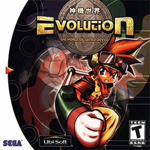
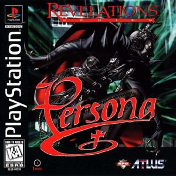
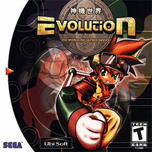
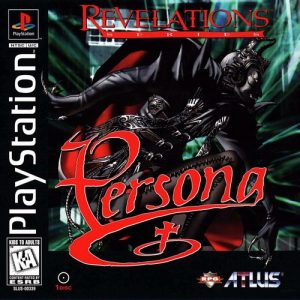

KENJI ENO, FORGOTTEN MAD GENIUS OF THE EARLY INDE SCENE
by Mike Anthony

by Mike Anthony
Ask random gamers off the streets what they think of the late game designer, Kenji Eno, and most would certainly all give you the same answer: Who is Kenji Eno? But, ask gamers whose roots in video games reach a bit deeper and span back through the later half of the 1990s, and many will express a polarizing set of sentiments either glorifying the man’s works and impact on video games, or angrily dismissing his career as trash. At the end of the day however, it doesn’t matter whether his games were widely loved or not. Kenji’s restless, creative spirit and unorthodox methods led to the creation of digital experiences that evoke strong, emotional responses from players and spectators with a wide range of tastes. Even today, his works from the 1990s captivate players at levels that many of today’s modern games fail to reach. The problem isn’t that Kenji Eno’s career lacked an impact; it’s that his contribution to video games and his punch to the industry itself is so often overlooked and forgotten.
Kenji Eno’s entry into the video game industry happened almost purely by chance. After dropping out of a respected high school and traveling Japan for a short while, Eno began seeking regular employment from a popular job recruiting magazine and found two jobs back to back. He quit each on the first day after reaching disagreements with the management. On his third search from the same magazine, he found a position at a small game company. After about a year and a half working there in sound design and project planning, he quit to form his own independent game company, EIM (Entertainment, Imagination, and Magnificence). At first, Eno was quite satisfied with his small company, but as his creative control slipped away and he was forced to modify his projects to include and revolve around licensed characters he became deeply upset with his work. “I had to tell my people that making character games is cool… but I myself wasn't convinced of that... Toward the end, there was a period where I wouldn't even go to my office because I was so upset." Feeling trapped, Eno closed EIM and left video games to work as a consultant for a famous automotive magazine.
After two years of consulting work, Eno traveled to San Francisco and found his way to a convention for the PC counterculture. He enjoyed the scene and began to see programming and computers in a new light. When the convention promoters took the stage, Eno was ready to leave, but the crowd took him by surprise. “I was thinking, ‘OK, we don't need to listen to suits; let's get out of here.’ But, actually, the creators that were there were giving the sponsors applause and really appreciating them, because the sponsors were supporting them so they were able to make their creations” (Bettenhausen and Mielke). On the flight back to Japan, Eno told his boss that he wanted to start making games again. With his bosses blessing and investment in his idea, Kenji Eno started the game studio that made his name: WARP.
Kenji ’s first project with his new independent game studio, WARP, was the horror title D No Shokutaku, known simply as D outside of Japan. The basic idea for D at the start was fairly simple: Explore a spooky castle and solve a few brainteasers to find your way out. However, Eno was not content with following the norm for his breakthrough title. Instead of using the standard, blocky 2D graphics that were common at the time, Eno and his team decided they would make the world’s first 100% CGI (computer generated imagery) game. To make this approach stand out even more, they designed D to play as a sort of interactive movie. Instead of just clicking on an item and then it’s yours, all actions in the game played out as little movie scenes. For example, when a player clicked on a bookshelf, instead of text box popping up describing what’s happening, The character would walk over and flip through the book, showing the player instead of telling. To further the idea of the interactive movie as a game and absorb the player in the experience, Eno and his team decided to not make the character the player controlled, Laura, some generic, throwaway personality, but instead a “digital actress” to use in future games that would play off of the movie style. In each of Kenji Eno’s three most notable titles, Laura plays a different character. Her personality is different, her style might be different, but she is always a blonde, blue-eyed woman who almost never speaks. Instead, the players are fed her thoughts and feelings through her actions and mannerisms. WARP always aimed to make her a proxy of human emotion and expression. She is designed to invoke empathy to draw the player into any situation and up the stakes and importance for her to succeed. While time hasn’t been kind to the game, it hasn’t exactly been cruel either. I first played D in 2004 and while there is no denying that the visuals and clunky movement throughout the game has aged poorly; the characters, tone, and overall ambiance are all just as engaging as they were back in 1995. When the game was nearing completion and all of the concepts were in place, Eno decided to add a dash of controversial content to hopefully boost sales. Flashbacks were inserted into the story adding a mysterious subplot involving murder, vampires, and cannibalism. On the page, this afterthought sounds tasteless and unnecessary, but it actually ties into the main plot in a fascinating way and is relatively tame, even for the standards of the time in which it was released.
However, knowing that this would be difficult to explain and banned by censors, Eno developed a devious plan to get his game to market with his radical ideas in tact. “There was a penalty you had to pay if you're late in submitting the master [master copy of the game], but you'd also have to deliver it by hand. So, knowing this, I submitted it late on purpose. I submitted a clean one and got it approved. Then I had to bring it to America. So on the plane, I switched the discs and submitted it to 3DO (game publisher), and it got manufactured like that” (Bettenhausen and Mielke). Eno’s devious plans worked and D went on to be a mega hit in Japan, qualifying for the greatest hit labels on Sony, Sega, and 3DO systems. In the U.S. and Europe, D enjoyed a quiet, but dedicated cult following.
Eno was happy that he had succeeded in producing a hit game on his own terms, but he refused to let WARP fall into a pattern. To counter the idea that WARP was going to stick with visually flashy thrillers, he shook things up with his next releases; Short Warp, a collection of mini-games parodying WARP’s other works, and the unusual Mahjong game, Oyaji Hunter Mahjong. “Usually, mahjong games let you strip a girl if you win the game. …But in my mahjong game, I created it so whenever an oyaji -- the Japanese term for a dirty, middle-aged bastard -- tries to do something bad to a girl, you go and play mahjong to save this girl. So I flipped the whole concept of mahjong games” Bettenhausen and Mielke). I found this concept hilarious. While many people find these sorts of scandalous games distasteful, very few people have the guts to do anything about it. To top all of this off, Eno got the acclaimed animator, Ichiro Itano to do the cutscenes (cinematic cutaways).

D was something brand new when it came out and became a hit in Japan
The success of D and the notoriety of his quirky follow-ups thrust Eno and WARP into the eye of Japan’s gaming public. As the attention around him grew, Eno developed a new concept that built upon the interactive movie elements in D. To keep things interesting, he had plans to use sound in a new way to guide the player, directionally and emotionally. This led to the concept work for 1997’s Enemy Zero, a game where players explore a spaceship with deadly invisible enemies only detectable through sound cues.
This new concept excited the major game companies and it didn’t take long for Eno to enter a big agreement with industry giant, Sony to develop the game exclusively for their Playstation game system. However, the deal soon soured as Sony tried to control Eno creatively and manipulated sales orders for D, printing only 28,000 when orders called for 100,000. Things escalated when Eno punched a patronizing sales official after being lied to about where his game was available in stores. Bridges were publically burned forever when he showed off the much anticipated trailer for Enemy Zero at a Sony press event, only to announce to Sony and the public that Enemy Zero and future titles would be exclusive to rival game company, Sega.
Enemy Zero has a beautiful soundtrack. Check it out
The methods of using sound chimes to guide the player, though infamously challenging, proved to be very effective with keeping players in a heightened anxious state, and a gorgeous soundtrack commissioned by Hollywood composer Michael Nyman pulled gracefully at heartstrings. Enemy Zero provides a vast, minimalist world for players to explore. Exploring the empty, twisting hall of the ship creates a palpable feeling of isolation that drives one to learn more about the sinister plot they are thrust into. The wonderfully expressive Laura once again drives it all along with her strong personality and very human responses to the action and tragedy around her. It’s hard not invest a piece of your heart in the wellbeing of the other characters on the ship. Kenji Eno masters sophisticated storytelling using tools of expression found only in gaming, at a level many games fail to reach now, over fifteen years later. Around the same time of Enemy Zero’s development, Eno found new inspiration to further explore the role of sound with storytelling in an interactive way.
“I had a chance to visit people who are visually disabled, and I learned that there are blind people who play action games. Of course, they're not able to have the full experience… So I thought that if you turn off the monitor, both of you are just hearing the game. So after you finish the game, you can have an equal conversation about it with a blind person. That's an inspiration behind this game”( Bettenhausen and Mielke).
From this idea, Eno and WARP set out to make Real Sound: Kaze No Regret (Real Sound: The Wind’s Regret). In Real Sound, the player relies entirely on sound cues to explore the mystery of a love story. The narrative in the game is rich with ambient noise to give a strong atmosphere of where the player character is and what’s going on around them. At certain points, a chime will sound and the player uses the game controller to provide input and develop the story. Different actions have different effects, leading to several possible endings. Excited by the possibilities this type of game could bring, Eno made a deal to make the game exclusively for whichever game company would donate 1,000 units of their game system to blind people. Again, gaming giant Sega won Eno’s alignment and the right for this unique experience.
After all of the drama with Sony, Enemy Zero, and Real Sound, Kenji Eno and his team at WARP decided to create the sequel to D for the new, upcoming 3DO system, the M2. Work began sometime in 1996 and was moving steadily along. D2 was set to be one of the first big titles for the system, and images from the game were already being published in magazines, drawing interest from the gaming public. Then, in mid-1997 when the project was about 50% completed, the M2 System was cancelled. With no compatible platform for the game to be transferred to, the project was cancelled. In 1998, Sega once again approached Kenji Eno and WARP for new software, this time for their upcoming Dreamcast system. Eno agreed to make a new title for the Dreamcast, and D2 became one of the first games announced for the new platform. Instead of building the old concepts and ideas from the cancelled D2, Eno and the team at WARP threw all of their old ideas out and decided to make a new game from scratch. Eno, always one to look two steps up in the distance, threw all their efforts at making an impressive game for the powerful new system.
This brand new D2 featured a whole new story, game style, setting, and featured the last appearance of the digital actress, Laura. D2 on Sega’s Dreamcast is both Eno’s most accessible game and the hardest to understand. The gameplay modes and difficulty were pretty standard for horror titles of the time, but the story was complex and at times convoluted. D2 was the first WARP game that I played, and at the time it had me completely hooked with its beautiful images and action heavy gameplay. However, after playing several of Eno’s early titles, it is easy to see that D2 has the weakest creative voice. The jumbled expression and lapse into the conventional exhausted Eno. The game became a sign for him to leave the gaming industry.
After a brief attempt to transform WARP into a different type of company, Eno disbanded the former game studio and left gaming behind. After leaving the gaming industry, Eno applied his creative approach to many endeavors. He worked on systems dealing with online music distribution, did several concept designs for businesses and restaurants, and even designed a system that allows people to buy things from vending machines via their cellphones, all while continuing small music projects on the side. Each of his various concepts and projects were built around ideas of communication, how people interact with technology, how staff interacts with customers- these concerns were the backbone for his successful endeavors. This includes games.
When reviewing Kenji Eno’s various games and post-WARP projects it’s interesting to see how similar his priorities and methods are. With all of his projects, Eno’s big priority was to reach people and make an impact on how they experience things; whether it’s changing users view on the importance of visuals in games or challenging how people interact with soda machines. His attitude and focus on the users experience remained consistent in his success.
Kenji Eno may not have had the reach of industry giants like Nintendo, Sega, or Sony, but that’s not really a bad thing. The freedom he sought and clung tightly to allowed him to experiment with his works in ways that big budgets and corporate influences forbid. His willingness to explore methods of communication and blur the lines of storytelling mediums led to the creation of titles that achieve great levels of impact and engrossment. Only recently has there been a surge in games that explore and toy with gaming conventions. This is largely due to modern conveniences around homebrewed game development and the ability to digitally distribute content. It’s funny to think of the contributions that Kenji Eno could have made if these options were more easily available in his lifetime. A few years before his death, Kenji Eno released his final game with his new company, Fyto for the Nintendo Wii’s download service. The game, You, Me, and The Cubes failed to make consumer impact but won acclaim of many critics who read deep themes of death, marriage, and child rearing of the curious puzzle game. To many, You, Me, and The Cubes was just another quirky indie game that seemed weird and untrustworthy. To the initiated like myself, it was a grand return of a lost mad genius.
The average gamer may have forgotten Kenji Eno, his controversies, and his games, but they see the results of his legacy everywhere these days. Would programmers in their basements still be making games on their own and putting them out on the internet if Eno was never around? Most likely, yes. Would they get serious recognition from the giants and high profile outlets if small, creative risk takers like Eno hadn’t gone and done their thing? I’m not so sure. In the past five years there have been several big studios making visually stunning interactive movie-type games that have gone on to earn boatloads of money and critical acclaim. Do they owe anything to D or Enemy Zero? I can’t say, but I can say this: Kenji Eno thought ahead of his contemporaries and many hit games today play based off foundations he established. It’s a shame that most gamers have no clue who he was, but it’s downright sad that todays ‘pioneers’ in the gaming industry don’t publicly acknowledge what came before them
Related links
by Mike Anthony
(Previously written for RetrowareTV.com)For the most part, people tend to be fickle and choosey with their RPGs. To be honest, there isn’t anything wrong with that. People are free to like what they like, choose what they choose, play what they want and pass on the rest. Gamers have strong feelings about what they play and what they pursue and this especially makes sense with Role Playing Games. The whole genre, while more easily recognized and accessible today than ever, is still a niche territory that has many different little sub-genres and trends nestled within it. People tend to find a vein of RPG gold they like and get attached. I personally like turn based J-RPGs or action heavy RPGS light on the stat based details. One of my best gamer friends however loves real time gameplay and heavy customization. The RPG genre seriously has something for everyone. But if you think about it, are these little grooves in tastes and expectation so great? In my opinion I think people often miss out on things when they find their go-to patterns of likes and expectations. It’s good to have standards and all, but you miss so much by not occasionally tossing it all to the wind and exploring the gaming landscape around you! There are so many games out there that fall into odd cracks or have quirks that juuust stopped them from reaching that trustworthy score from EGM, or Gamespot. Games that aren’t perfect technically, sometimes by a long shot, but still have much to offer in terms of entertainment or enjoyment. The land of RPGs is a perfect place to do this exploring. Like I said there are lots of different areas to explore and by nature, RPGS tend to require a strong investment and attention to detail. By giving a wonky RPG this standard treatment you get to dig deep and explore a title. You get to find the diamond in the rough, (sometimes deep, in the rough.) or fall in love with a quirk that allows you to overlook rougher things like clunky mechanics.
 

Let’s nitpick, shall we?
I love games like this. Wonky RPGs make up a noticeable section of games that receive my unwavering affection. They stick with me, and I like looking for new ways to talk about a game that is spat upon or maybe never really talked about. Wonky RPGs have lead me to some great discussions at conventions and given me interesting things to talk about here. (I mean, I have definitely mentioned Cosmic Fantasy 2 more often than like every retro game writer/review I’ve seen.) With a close look, these games can be fantastic experiences if you give them a proper go and the right attention. Everyone should step outside of the box you’ve built yourself once and a while and I’m going to try and explain why you should Wonky RPGs a chance.
First, a lot of the games I speak fondly of are noteworthy because in some way, they are different. A lot of these titles try new things or experiment outside the norm. It’s true many have varying levels of success or innovation, but that doesn’t mean that new idea or twist isn’t worth experiencing. There are a lot of components that can be played with to spice up an RPG or keep a seasoned player on their toes. Graphics and style, gameplay and mechanics, or worlds and characters, they are all toys that developers tweak and manipulate a model with. Games like Mother 1 and Cosmic Fantasy 2 (See? I called it,) fall well into this space. The combat and overall game mechanics for this 1992 Turbografx-CD game are pretty bland. Monsters are genreric, battle screens are sparse, commands are competent but nothing new, and the encounter rate is a little erratic. However, on top of all that, the game has a lot going for it on the narrative and aesthetic side. The characters all have something interesting to say, the story on a main levels is a fun fantasy/sci-fi romp but it really knows when to throw a punch and switch directions. Cosmic Fantasy 2 also has some great sprite based cut scenes carrying it in key moments. The art is colorful and expressive. The translation is pretty good too, courtesy of the late, great working designs. All of this was very uncommon for an RPG made by a small company so early into the 1990s. Still, I often found myself diving right back into the fray of awkward and difficult gameplay traits mentioned before without a second thought because the game pulled me in.
Mother 1 follows this trend nicely as well. The Modern setting, stylish, well-crafted story, even the enemies and some items made the game stand out. Nevertheless, it doesn’t have anywhere near the following its sequel, Earthbound has. That’s because the combat is old fashioned and cumbersome, the difficulty and item capacity are frustrating, and the encounter rate is… let’s just call it clingy. Even though all this is true, I totally love this game! For me the strong points are so unique I kept going because my curiosity compelled me. The game became a challenge, a personal quest to finish. As I kept going through every frustrating step I found more fulfillment in the narrative and glue that held it together. It’s easy to brush Mother 1 off as Earthbound ‘s rougher, stiff older brother. Many do, but it’s more than than meets the collective eye.
Mother 1 (Earthbound Zero Beginnings) tried to do alot of things differently
Some games are bad because they play it too safe. They blend with the the gaming backdrop of the day or sometimes there isn’t much when you peel back the fine surface layer. However, I’ve noticed the right twist here, and the right details there can take a game that could have been boring to the point of instant forgetability, and move it up a notch into the “enjoyable but flawed place that is the wonky RPG zone. Evolution: The World of the Sacred Device for the dreamcast and it’s sequel fall well into this category. It’s a pretty standard dungeon crawling affair, but it’s saved with a battle system that has a slight strategic twist with party placement and charming characters. To be honest the tweaks and stand out characteristics don’t go too far but it works out well that way. It’s just enough to make the dungeon crawling interesting and the other elements aren’t too complicated to balance it out.

Evolution on the Dreamcast seems run of them mill at first glance but a subtle strategic party placement system in battle, customizable ability/item mechanics and charming designs power the rest of the game.
When I first started thinking of games that fit my “wonky games” outline Persona 1, or Persona Revelations came to mind quickly. These days, the Persona series is up there with the greats of JRPGs and some might consider putting a key entry on a flawed games list sacrilege, but yeah, it fits. Persona 1, the PS1 version, has a lot of elements that conflict from a quality/functionality standpoint. Some things aesthetically are done well, like character designs and music, but others like maps and menus have aged about as well as cheese left in the august sun. I’d argue that the menu system really wasn’t good to begin with. It might be fair to say the difficulty is a little unbalanced as well, but being the first game spinning off from the notoriously difficult Shin Megami Tensei (SMT) series it might just be where things were in that point of evolution. But all that aside, the game has a lot going on. The demon system, moon cycles, and other mechanics are inspired by other SMT games, but Persona molds these concepts into it’s own thing. Persona 1 is a great example of a wonky game that one would play to put recent entries into a clearer, well rounded perspective. If you want to get a better sense for the history and development of a favorite series sometimes it’s best to look a the beginning. (and often times that start point will be a bit wonky.)


Persona 1 had it’s work cut out for it as the first in a big line of spin offs from the massive Shin Megami Tensei line. While impressive it struggles in some important areas. Luckily the PSP remake fixes many things.
Earlier I mentioned that style and tone can sometimes carry a wonky RPG along despite mediocre or frustrating elements that go with it. Okage: Shadow King is a prime example of this. To be honest, I haven’t beaten it yet. I just picked it up after it popped up on PSN for PS4 but I am impressed despite it’s flaws. Okage is a visual wonderland. The designs are so unique, they really stand out for and game that first came out very early in the PS2’s lifespan. A time where more developers were attempting softer looks with more realism. Because of this you can see the imagination that was put into this game bursting at the seams. It’s fun to keep going just to discover what you will see next.But alas, like all the wonky games mentioned, there are some pits and valleys to cross along the way. Unfortunately, the part of Okage that was given the least amount of polish was the dungeons. The layouts aren’t too interesting and the visuals kind of blend and aren’t much to look at. It’s a shame considering how integral they are. Another point of contention is the battles. Okage does that thing some old RPGs do where you can’t really target specific enemies, just enemy groups. For example you can only select the 3 Tim Burton-y pumpkins in front of you or the 2 scraggly anime scarecrows. To top it off the menu system for doing all of this is just a bit… odd. Not cumbersome, just different. For someone who has played RPGs as old as the NES to current day these quirks aren’t an issue to me, they are simply quirks. But for someone who started their RPG career with the PS2 like my friend Vivi who is playing Okage as well right now, it can be more of a hurdle. It’s all relative depending on experience.


Okage: Shadow King’s art style and personality are absolutely fantastic but some mechanics and level designs may leave specific players disappointed.
Remember, sleep is overrated.